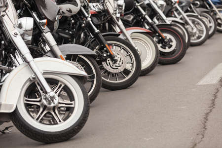
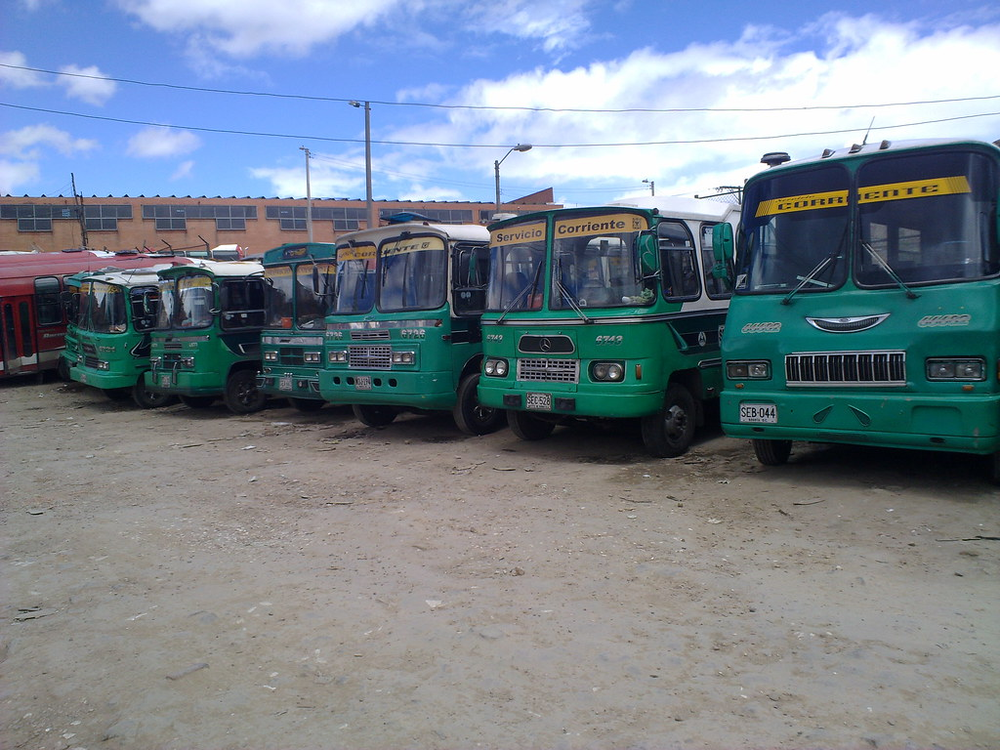

MOTOCICLETA
Las moticletas son Vehículo con motor y dos ruedas, para una persona sola o para dos. para ello Nuestro estacionamiento ofrece a nuestros amigos que utiliza este medio de trasporte un espacio de 1.0x2.50

AUTOMOVIL
los automoviles son vehiculos con motor y cuatro ruedas que es utilizada para el trasporte de 4 personas para esto nnuestro estacionamiento ofrece un espacio de 3.70x 5.0 m de largo brindando un buen espacio para la comodidad del usuario

BUSETAS
nuestro estacionamiento ofrece un espacio de 5.70x 9.0 m de largo de esta manera ofrece un espacio adecuado para estos vehiculos no mayores a seis ruedas con una gran cantidad de puestos

CICLA
>para este medio de trasporte nuestro estacionamiento ofrece un espacio de 1.0 x 1.70 m de largo dando asi una comodidad para los usuarios y garatizado la seguridad de este medio de trasporte